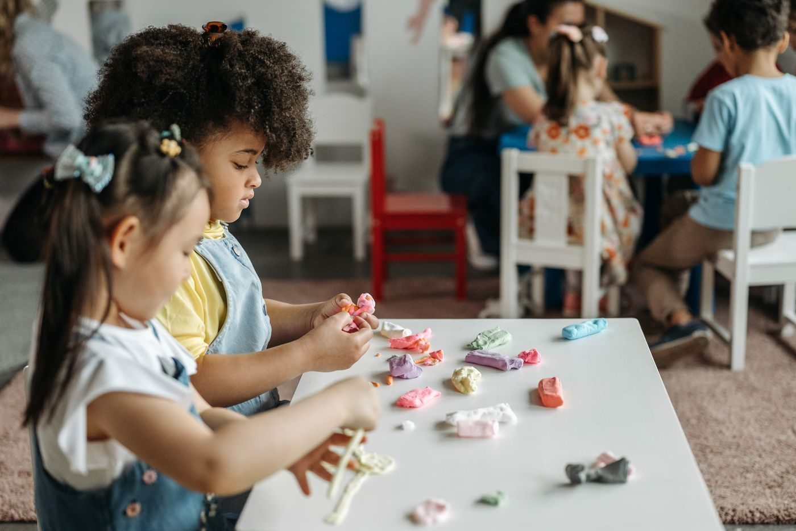

The Children's School at St John's Church
A Christian preschool in historic downtown Savannah, serving children from 14 months through PreK since 1996.
About
The Children's School at St John's Church is a Christian preschool in historic downtown Savannah, established in 1996. Programs run from Mother's Morning Out for the youngest children through classes for ages 14 months to PreK, with 2-, 3- and 5-day week programs, plus summer preschool and infant programs. The school's focus covers spiritual, intellectual, physical, and emotional development.
Services
Christian preschool classes
Classes for ages 14 months through PreK at a Christian preschool established in 1996.
2-, 3- and 5-day week programs
Mother's Morning Out
Summer preschool and infant programs
Whole child development focus
A focus on spiritual, intellectual, physical, and emotional development.
Gallery


All gallery photos are stock photos, labeled as such. They show the kind of work and setting described on this page, not this business.
Visit
Contact
The Children's School at St John's Church serves Savannah, GA. Questions? Call +1 912-232-1225.